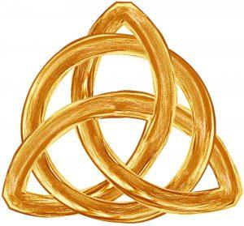

Wiara w Trójcę czy “trójcę”?

Tak jak często przywołuje się fragmenty dzieł wczesnych pisarzy kościelnych mające świadczyć o ich wierze w boskość Syna, tak samo często cytuje się te, które mają potwierdzać ich domniemaną wiarę w Trójcę. Jednak w tym drugim przypadku, sprawa przedstawia się dla trynitarian znacznie gorzej niż przy dowodzeniu boskości Pana Jezusa. Owszem, dość często można znaleźć cytaty dowodzące tego, że ojcowie apostolscy oraz apologeci wierzyli w „trójcę”. Jednak trudno znaleźć w nich „Trójcę”.
Jak słusznie zauważył jeden z czołowych myślicieli unitariańskich obecnego czasu, Dale Tuggy, istnieje różnica pomiędzy „Trójcą” a „trójcą”1. Na czym ona polega? Ta pierwsza „Trójca” (pisana wielką literą), oznacza jednego Boga istniejącego w trzech hipostazach (osobach). Dzielą one tę samą istotę, naturę i atrybuty (wieczność, wszechmoc, wszechwiedzę, niezmienność itd.). Zarówno Ojciec, Syn jak i Duch Święty są bowiem w całej pełni Bogiem. Tak opisuje to przytaczany już wcześniej atanazjański symbol wiary. Dobitnie stwierdza on, iż jeśli ktoś chce być zbawiony musi czcić Boga w Trójcy osób. Każda z nich ma przy tym równą chwałę, majestat i wszechmoc. Wszystkie są ze sobą współwieczne i nie ma w Trójcy „nic wcześniejszego lub późniejszego, większego lub mniejszego”2. O tejże „Trójcy” w podobnym duchu wypowiada się biskup Rzymu (papież) Leon w liście do Flawiana, który został włączony do dokumentów Soboru Chalcedońskiego (451):
Gdy bowiem wierzy się w Boga: i Wszechmogącego i Ojca, wskazuje się tym samym na istnienie współwiecznego Mu Syna. Syn w niczym nie różni się od Ojca, ponieważ jest Bogiem z Boga, Wszechmogącym z Wszechmogącego, Współwiecznym – zrodzonym z Wiecznego. Nie jest późniejszym w czasie ani niższym potęgą, ani różniącym się chwałą ani oddzielonym istotą3.
Tak więc, powtórzmy, wiara w „Trójcę”, to przyznanie “jednego Bóstwa”, “równej potęgi”, “równej chwały i współwiecznego majestatu” wszystkim osobom boskim. To wiara, iż “nic w Trójcy nie jest wcześniejsze lub późniejsze, nic większe lub mniejsze, lecz trzy osoby w całości są sobie współwieczne i zupełnie równe”.
Biblijna “trójca”
W przeciwieństwie do tej wyżej opisanej „Trójcy”, istnieje jeszcze biblijna „trójca”. W tej drugiej Bogiem jedynym jest tylko jedna osoba – Ojciec. Natomiast Jego Syn oraz Duch Święty nie są owym „jedynym Bogiem”, jednak pełnią istotną funkcję zbawczą w planie odrodzenia wszechświata. Ta triada, której najważniejszą częścią jest Bóg, z chrześcijańskiego punktu widzenia jest sercem i osią naszego zbawienia. Nikt nie zaprzeczy przecież, że aby dostąpić łaski życia wiecznego, trzeba uwierzyć w Boga Ojca, w zbawcze dzieło Jego Syna, oraz w uświęcającą moc Bożego Ducha, przywracającego w nas Boże podobieństwo.
Istnienia takiej „trójcy” nie kwestionuje oczywiście żaden unitarianin. To właśnie taką wiarę wykazywali chrześcijanie czasów apostolskich, i taką „trójcę” można najczęściej spotkać w pismach wczesnochrześcijańskich. Tak więc drogi Czytelniku, bądź świadom tego, że samo stawianie obok siebie trzech pojęć (Ojca/Boga, Syna, Ducha Świętego – tzw. “formuły trynitarne”), często spotykane w Biblii i w świadectwach pierwszych chrześcijan, nie jest równoznaczne z tym, iż ktoś jest trynitarianinem. Dopiero czynienie tego w sposób zgodny i niesprzeczny z przykładowo cytowanym wyżej symbolem atanazjańskim sprawia, iż możemy kogoś uznać za wierzącego w ortodoksyjną Trójcę.
Zauważmy jednak, jak często trynitarianie, chcąc udowodnić domniemaną „prawowierność trynitarną” pierwszych chrześcijan, serwują nam cytaty pisarzy wczesnochrześcijańskich, które w żaden sposób nie dowodzą wiary ich autorów w „Trójcę”, ale co najwyżej w „trójcę” właśnie. Kolekcjonuje się fragmenty, w których występuje obok siebie Ojciec, Syn i Duch, albo Bóg, Syn i Duch. Nie zauważa się jednak, że od samego wymienienia tych trzech pojęć, do przyznania, że „tworzą” one jednego, trójosobowego Boga, droga jest niezmiernie daleka.
Przykład Tertuliana
Nawet Tertulian, który był pierwszą osobą używającą terminu „Trójca”, i którego w zasadzie należałoby uznać za swego rodzaju „ojca” tej doktryny, nie był do końca ortodoksyjny gdy przychodziło do opisu wewnętrznych relacji boskich osób. I choć faktycznie wydaje się on wierzyć, że Bóg to Ojciec, Syn i Duch4, to jednak warto przypomnieć przytoczony już wcześniej cytat, który wyszedł spod jego pióra:
Ponieważ Bóg jest w podobny sposób Ojcem jak jest Sędzią. Lecz nie zawsze był On Ojcem i Sędzią jedynie dlatego, że zawsze był Bogiem. Ponieważ nie mógł być Ojcem zanim nie pojawił się Syn, ani Sędzią przed pojawieniem się grzechu. Był zatem czas kiedy nie istniały z Nim ani grzech ani Syn, ponieważ ten pierwszy z Pana uczynił Sędziego, a ten drugi – Ojca. W ten zatem sposób nie był On Panem w stosunku do tych rzeczy, które Go Panem czyniły. Lecz miał On stać się Panem w pewnej przyszłości; tak jak stał się Ojcem przez Syna oraz Sędzią przez grzech, tak również stał się Panem z powodu tych rzeczy, które uczynił, aby one mogły mu służyć5.
Czy jest to zatem prawowierna Trójca, skoro w trójosobowym Bogu niegdyś nie było Syna, a więc Jego drugiej osoby? Sprawy nie ułatwia kolejne sformułowanie użyte przez sławnego Kartagińczyka:
Ojciec jest zatem całością substancji, Syn natomiast jakby jej wypływem i częścią, jak sam zaświadcza: Ponieważ Ojciec większy jest ode mnie6.
Nieco zagadkowe, prawda? I jeszcze jeden fragment:
Tak więc jak Słowo Boga nie jest tym samym co ten, do kogo ono należy, podobnie i Duch; nawet jeśli powiedziano, że jest Boga, to jednak sam nie jest tym, do kogo należy. Żadna rzecz należąca do kogokolwiek nie jest bowiem tym, kto ją posiada. Oczywiście gdy coś od kogoś pochodzi i w ten sposób do niego należy, że z niego pochodzi, może mieć te same właściwości jak ten, z którego pochodzi i do którego należy. I dlatego Duch jest Bogiem i Słowo jest Bogiem, ponieważ pochodzi od Boga, ale nie jest tym samym, od którego pochodzi. Lecz jeśli Duch Boga, jakkolwiek substancjalny, nie będzie samym Bogiem, lecz Bogiem o tyle, o ile pochodzi z substancji samego Boga, jest realnym bytem i jakby częścią całości […]7.
Dla Tertuliana więc, zarówno Słowo jak i Duch są Bogiem. Jednak tylko dlatego, że „pochodzą” od Boga. Natomiast słowa mówiące o tym, że Duch „nie będzie samym Bogiem” sprawiają, że wątpliwości co do ortodoksyjności Trójcy Kartagińczyka, jeszcze bardziej się powiększają.
Przyjmując jednak za dobrą monetę twierdzenie, że Tertulian właśnie w taką Trójcę wierzył, zwrócić musimy uwagę na to, że jego dzieła powstawały na początku III wieku, a więc ponad 100 lat po śmierci ostatniego apostoła. Przyznać wypada, że to jednak dość późno.
Odstępstwo
Można by się zapytać jednak, czy jest w ogóle możliwe, by przez ponad jeden wiek chrześcijaństwo aż tak bardzo odpadło od prawdy o Bogu? By tak szybko nauczało błędnie o Jego trójjedyności? Może jednak jest to zbyt krótki okres czasu na tak wielkie odstępstwo i wiara Tertuliana, choć niedojrzała, była świadectwem tego, że od początku wierzono w Trójcę? Otóż wydaje się, że ponad 100 lat to na tyle długi okres, by mogły zachwiać się fundamenty. Sam Tertulian bowiem przyznaje, że za jego życia monarchianie modalistyczni, z którymi polemizował, stanowili w chrześcijaństwie większość8.
Ponieważ monarchianizm w oczach trynitarian jest herezją, więc ci ostatni chcąc nie chcąc muszą przyznać, że tak głęboki z ich punktu widzenia błąd, mógł jednak zapanować. Wydaje się, że analogiczna sytuacja mogła mieć miejsce ze stopniowym rozwojem trynitaryzmu. Ponad 100 lat w świecie, w którym przepływ informacji nie jest zbyt wielki, a chrześcijanie nie posiadają swojego decyzyjnego centrum, to wystarczająco długi okres, by mogły uformować się nauki, które z apostolskim nauczaniem nie miały zbyt wiele wspólnego, i by te nauki rozprzestrzeniły się bardzo szeroko. Tak jak monarchianizm mógł zdobyć umysły większości chrześcijan, tak trynitaryzm w początkowej fazie, mógł stać się nań stosunkowo atrakcyjną odpowiedzią.
O tym, że u progu III wieku trynitaryzm stawiał swoje pierwsze kroki, świadczyć mogą dwa czynniki. Pierwszy to ten, że był on w swej warstwie doktrynalnej bardzo niedojrzały. Dowodem tego są przytaczane wcześniej zupełnie nieprawowierne wypowiedzi czy to Tertuliana, czy też późniejszego Orygenesa. Druga przyczyna takiego poglądu wynika z braku występowania jasnej formuły trynitarnej w pismach chrześcijan aż do końcowej części II wieku. Nie jest niespodzianką to, że nie spotykamy tam słowa „Trójca”, bo przecież może być to tylko termin techniczny. Jednak jest oczywiste, że używany wówczas język mógł w sposób opisowy, choć jednoznaczny, przekazać informację o wierze w trójjedynego Boga.
Nic nie stało na przeszkodzie by, podobnie jak to miało miejsce w przypadku Tertuliana, napisać coś podobnego do stwierdzenia: istnieje jeden Bóg i jest nim Ojciec, Syn i Duch Święty. Jednakże takie sformułowania przed końcowymi dekadami II wieku nie padają w ogóle. Wystarczy prześledzić pisma Ojców Apostolskich, którzy pisali na przełomie I i II wieku, by to dostrzec. Nawet jeśli wspomina się w nich o boskości Jezusa, tak jak przykładowo czyni to Ignacy, czy też wymienia obok siebie Ojca, Syna i Ducha, to nigdy nie padają słowa, że są oni numerycznie/liczbowo jednym Bogiem. Nigdy.
Skoro w NT nauczano podobno właśnie tego i w to właśnie wierzono, fakt ten wydaje się być niezmiernie dziwnym. Przestaje natomiast dziwić wówczas, gdy zauważy się, że nauka o Trójcy była nieznana w czasach Nowego Testamentu. Jej rozwój zaś, był ewolucyjny i stopniowy. Rozpoczął się od sukcesywnego zrównywania pozycji i statusu Pana Jezusa z Ojcem, oraz przypisania osobowości Duchowi Świętemu. To z kolei zmuszało ludzi przyznających się do takiego poglądu, do jego pogodzenia z monoteizmem. Próby tego pogodzenia były różnorakie i miały swą kulminację w IV wieku. Stał się on świadkiem jednego z najbardziej bolesnych sporów w łonie chrześcijaństwa.
Przypisy
- D. Tuggy, What is the Trinity, str. 25-33. ↩
- S. Głowa, I. Bieda (red.), Breviarium Fidei. Wybór doktrynalnych wypowiedzi Kościoła, str. 623-624 ↩
- A. Baron, H. Pietras (red.), Dokumenty Soborów Powszechnych, T. 1, str. 199. ↩
- Tertulian, Przeciw Prakseaszowi, II.4, w: E. Buszewicz, S. Kalinkowski (tłum.), Trójca Święta. Tertulian, Przeciw Prakseaszowi. Hipolit, Przeciw Noetosowi, str. 38. ↩
- Tertulian, Against Hermogenes, 3:18, cytowane za: Edgar Foster, Christology and the Trinity: An Exploration, str. 30 (tłum. własne). ↩
- Tertulian, Przeciw Prakseaszowi, IX.2, w: E. Buszewicz, S. Kalinkowski (tłum.), Trójca Święta. Tertulian, Przeciw Prakseaszowi. Hipolit, Przeciw Noetosowi, str. 47. ↩
- Tertulian, Przeciw Prakseaszowi, XXVI.5, 6, w: tamże, str. 78. ↩
- Tertulian, Przeciw Prakseaszowi, III.1-2, w: tamże, str. 38. ↩
↞ Spis treści Następny artykuł ↠
kopia strony: https://thaleia.pl/unitarianizm/wiara-w-trojce-czy-trojce Wszelkie prawa autorskie należą się autorowi tej strony
686f2a3525